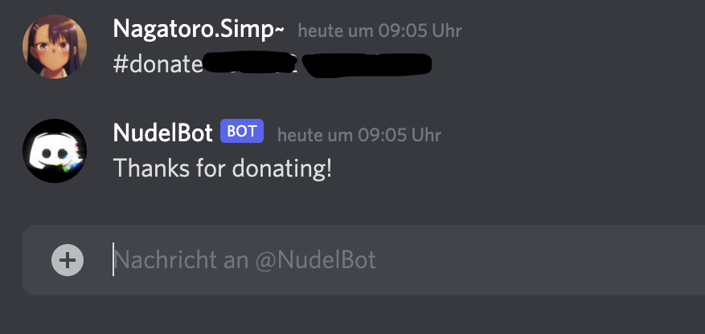

Welcome to the NudelBot commands site!
Here you can see all commands!
Donate is a plugins inside the untis plugins that allows you to donate your untis login data which is required at least from one person to make the untis plugins work.
Use
#donate [login_name] [password]in private chat with the bot and you should get
Thanks for donating!If you get an error message like:
Make sure to donate in private chat for data security reasonsTry to use donate in the private chat with the bot. 